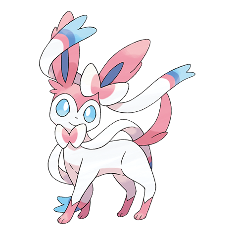

ニンフィアの弱点（2倍）
どく はがね
#700 · フェアリー · むすびつきポケモン · 第6世代
イーブイが5世代ぶん待っていた結末です。フェアリー単タイプに特防130、そのうしろに特攻110、そしてこのタイプに付いてくるドラゴン無効。

BST 525
特性：メロメロボディ · フェアリースキン（隠れ特性） · 進化段階：最終進化
どちらの列も、18タイプの相性表から取っています。出典は タイプ相性表で、フェアリーのドラゴン無効も含めて確認できます。
どく はがね
かくとう むし あく
ドラゴン
ヒトカゲとリザードンがカントーほのお系統の両端を担当していて、残りの一族は図鑑の索引にまとめてあります。
イーブイのフェアリーの結末
No.700は第6世代、フェアリータイプそのものと同時に登場しました。10年以上ぶりの新しいイーブイの進化です。タイプはフェアリー単体、特性はメロメロボディとフェアリースキン、系統はここで終わります。イーブイから進化し、そこから先へは進みません。
この登場時期は、古い記事を読む人にとって大事です。第6世代より前はフェアリータイプが存在せず、ニンフィアも、ドラゴン無効も、はがね弱点もありませんでした。このページの相性はすべて現在の相性表に沿っています。いまのゲームが使っている表です。
強く刺さるのはどくと はがねの2タイプ。半減になるのはかくとう・むし・あくの3タイプ。ドラゴンはまったく効きません。フェアリーが登場したとき、シリーズを走り回っていたドラゴンの抑えとして有名になったのは、この一項のおかげです。
守りのパッケージとして読むと、きれいな穴が2つある良い表です。どくと はがねは、ゲームでいちばん多い攻撃タイプではありません。だからニンフィアが本当に危険な場面は少なく、ドラゴン無効は見た目以上の価値があります。何も受けずにドラゴンわざへ交代で入れるからです。
配分は攻守とも特殊に寄っています。特攻110に特防130。そこにHP95が加わると、特殊を受け止めて自分の特殊で返すポケモンになります。守りの軸が欲しいパーティなら、ほぼどこにでもはまる役割です。
物理側は薄いです。防御65と攻撃65が素早さ60の隣に並ぶので、強い物理わざで殴ってくる相手が本当の脅威になりますし、図鑑の大半に対して先手は取れません。ニンフィアはすべての問題を解決しません。1つの問題を、極端にうまく解決します。
隠れ特性のフェアリースキンは、覚えているノーマルタイプのわざをすべてフェアリータイプに変え、さらに威力を上げます。ノーマルわざは数が多く、覚えるのも簡単。だからこの特性は、攻めの選択肢を自分のタイプに書き換えて、静かに広げてくれるわけです。
通常特性のメロメロボディは、接触してきた相手をメロメロにすることがあります。もともと不安定で、触れてこない相手には何もできません。だからこそ、多くのトレーナーは隠れ特性のほうを追いかけます。
条件は世代ごとに少しずつ変わってきましたが、形は同じです。トレーナーとのなつき度が高く、わざにフェアリー技があること。石もレベルも要りません。エーフィやブラッキーと同じ、なつき進化の一種です。
そのおかげで、イーブイは図鑑でいちばん忙しい一家になりました。小さな茶色いポケモン1体から8本の枝が伸び、石・なつき度・時間帯・場所・なでなで度で分かれます。ニンフィアは、そのために新しいタイプを必要とした1体です。
守りの軸は1体で決めるものではなく、パーティの話です。まず6体の形を パーティ編成 で描いて、決めきれない枠は ランダム選出 に任せてください。縛りのある旅なら、 ヌズロック編成 がルールを管理してくれます。
次は細部です。性格は ポケモン性格表に乗せ、数値は 個体値計算で確認。本当に些細な迷いは、 ポケモンルーレット で回して決めてしまいましょう。議論するより早いです。
集める側の話は別のページにあります。基本の確率は 色違いの出現率、自動で狩るなら ランダム色違い生成で、標準の図鑑より上の形態は ランダムメガシンカ と このポケモンだあれ？.
ニンフィアは守りの2体のうち、特殊側の担当です。物理アタッカーを処理できる相手を隣に置けば、2体で互いの苦手側を埋め合えます。ゲームでいちばん古い編成の技で、ここでもいちばん確実に効きます。
ドラゴンが多い相手に、わざ枠を使わずに答えを出せるのも強みです。ドラゴンタイプのアタッカーは、自分の主力わざがまったく通らない相手と向き合うことになります。それだけで、1ターンも使わずに相性が決まることもあります。
物理の列を見てください。フェアリーが弱点でない強い物理アタッカーは、防御65をそのまま通り抜けていきます。だからニンフィアは、特殊アタッカーや、じめん・みず・かくとうのように反撃で脅かしてこない相手に向けて出すのが基本です。
自分の火力は爆発ではなく安定です。フェアリーの特攻110があるので、図鑑の多くに対して等倍以上で通ります。特防130があるので、特殊側で続く勝負はたいてい取り返せます。ただし、強い物理アタッカーに対して線を保たせるのはやめてください。防御65では長くもちません。
よくある質問
フェアリー単タイプで、第6世代で登場したタイプです。弱点が2つ、耐性が3つ、そしてドラゴンわざを完全に無効にします。
どくと はがねで、どちらも2倍。かくとう・むし・あくは半減で、ドラゴンのわざはまったく効きません。
イーブイがトレーナーとなつき合い、フェアリーわざを覚えているとニンフィアに進化します。石もレベルも要らず、ニンフィアから先へ進化するポケモンもいません。
通常の特性がメロメロボディ、隠れ特性がフェアリースキン。フェアリースキンはノーマルわざをフェアリーわざに変えて威力も上げ、メロメロボディは接触してきた相手をメロメロにすることがあります。
1歩だけ。イーブイが入り、フェアリーわざを覚えた状態でなつき進化してニンフィアになります。ニンフィアは先へ進化しないので、チャートはそこで終わりです。
特殊攻撃を受け止めること。特防130とHP95で守りの軸として十分に機能し、特攻110があるので、相手が攻めてくるあいだじっとしているだけの存在ではありません。